書斎の主が集めてきた言葉を、全部まとめて綴じた本。
開くたびにページの順番が入れ替わる。同じ順番で読めることは二度とない。言葉が増えるたびに、日に日に分厚くなっていく。
読み方 ページの右上をつまんでめくる。左へ引くと次のページ、右へ引くと前のページ。右上の数字は、今までに見た枚数。
お気に入り 気に入ったページで「お気に入りに登録」。登録したページだけを綴じ直した、自分だけの一冊を「お気に入りだけ」で開ける。
栞 「栞を挟む」を押すと、その並びとそのページを覚える。以後は同じ並びの続きから読める。「新しく開き直す」で並びを変えると、栞は外れる。栞は一つだけ。この端末に保存される。
音 雨と暖炉の音。本を開いてからは音楽。「設定」で変えられる。